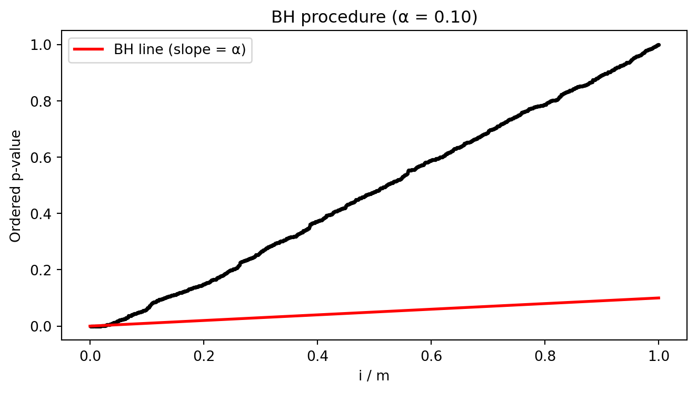

Code
import numpy as np
import matplotlib.pyplot as plt
rng = np.random.default_rng(42)
m, m1 = 1000, 50
p_null = rng.uniform(size=m - m1)
p_alt = rng.beta(0.1, 1, size=m1) # small p-values for alternatives
pvals_sim = np.sort(np.concatenate([p_null, p_alt]))
fig, ax = plt.subplots(figsize=(7, 4))
ax.scatter(np.arange(1, m + 1) / m, pvals_sim, s=3, color="black")
ax.plot([0, 1], [0, 0.10], color="red", linewidth=2, label="BH line (slope = α)")
ax.set_xlabel("i / m")
ax.set_ylabel("Ordered p-value")
ax.set_title("BH procedure (α = 0.10)")
ax.legend(loc="upper left")
plt.tight_layout()
plt.show()